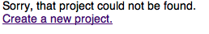
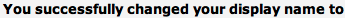
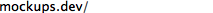
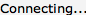
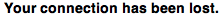
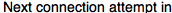

from sikuli.Sikuli import * def changeName(username): click() type( "a", KEY_CMD) wait(1) type(username+"\n") def reconnect(): if exists(): click() def testProjectExists(): if exists(): exit("Project not found") def testNameChange(): if not exists(): exit("Name change failed") def testProjectLoaded(): wait(5) if exists(): print("ok") elif exists(): print("ok") else: exit("Page failed to load") if exists(Pattern().exact().similar(1.00)): exit("Auto-redirect to new project URL failed.") if exists(): exit("Node did not connect") def testLostConnection(): if not wait(, 20): exit("Socket.io disconnect failed") if not exists(): exit("Reconnect Now button missing") if not wait(, 10): exit("Auto-reconnect attempt not started") def testReconnected(): if not waitVanish(, 20): exit("Auto-reconnect failed")